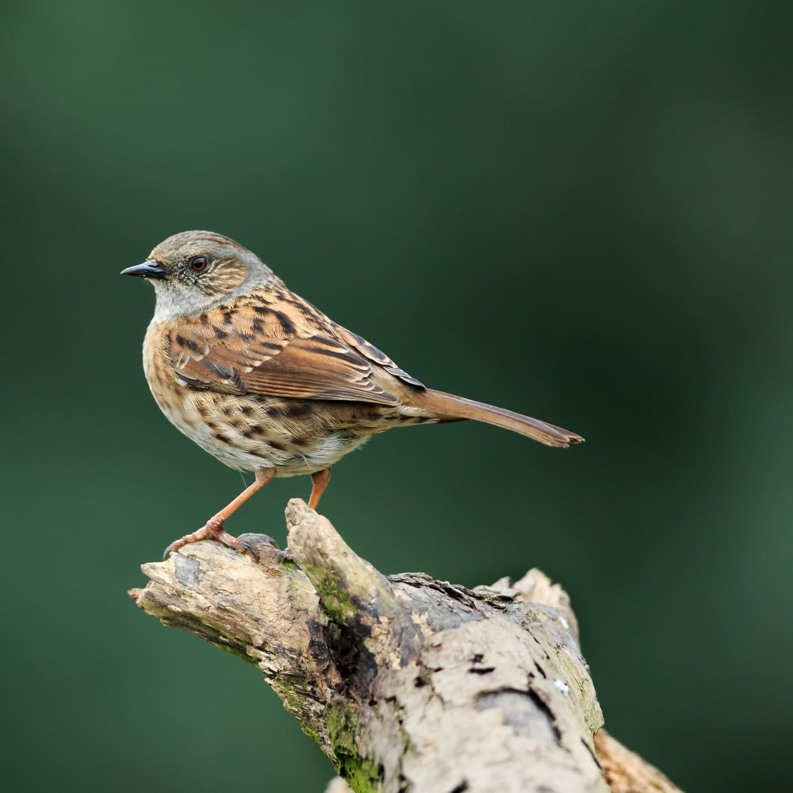

At first glance the Dunnock, also known as Hedge Sparrow or Hedge Accentor, looks like
a dull sleek sparrow.
On closer inspection it is quite attractive with its blue-grey head and breast, light
and dark brown streaky back, brown streaked flanks and pink legs. The black bill is finer
than that of a sparrow, because it feeds mainly on insects and not seed.
Quiet and unobtrusive, it is often seen on its own, creeping along the edge of a flower
bed or near to a bush, moving with a rather nervous, shuffling gait, often flicking its
wings as it goes. When two rival males come together they become animated with lots of
wing-flicking and loud calling.
The Dunnock is predominantly a ground feeder and feeds on insects, such as beetles and ants, and spiders, which it gleans from leaf litter, among plant roots, etc. In the autumn and winter they will eat seeds and berries. Occasionally, especially in the winter months, some Dunnocks are bold enough to brave the bird feeder or visit a bird table for any seedy, fatty scraps. But mostly they prefer to hide among shrubs or feed on other birds' leftovers on the ground.
Woodland Farmland Grassland Urban and suburban.
Dunnocks inhabit any well vegetated areas with scrub, brambles and hedges. Look in deciduous woodland, farmland edges, parks and gardens. They keep largely on the ground and often close to cover.
Dunnocks can be seen all year round.